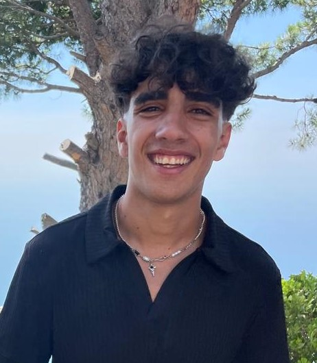

CONTACT
Mail: albert.el.hilany@gmail.com
Phone: +961 71 / 973 / 250
Location: Check Location
INFO
Place of Birth: Lebanon, Deddeh-Koura, North
Date of Birth: 10/11/2006
COMUNICATION
I'm a strong communicator with excellent verbal and written skills, able to effectively convey ideas and build rapport with diverse audiences. Through active listening and clear expression, I foster strong relationships and ensure seamless interactions, making me a valuable asset in any team or customer-facing role.
LEADERSHIP
As a former basketball team member, I've developed strong leadership skills through teamwork, strategy, and communication. I've learned to motivate teammates, make quick decisions, and work towards a common goal. I believe these skills translate where I can lead by example, drive results, and collaborate with others to achieve success.
WORK UNDER PREASURE
I thrive in fast-paced environments where quick thinking and composure are essential. My experience in competitive sports and high-traffic customer service has taught me how to stay focused and productive during peak hours or unexpected challenges. I take pride in my ability to manage multiple tasks simultaneously while maintaining a positive attitude and ensuring that the quality of service never wavers.